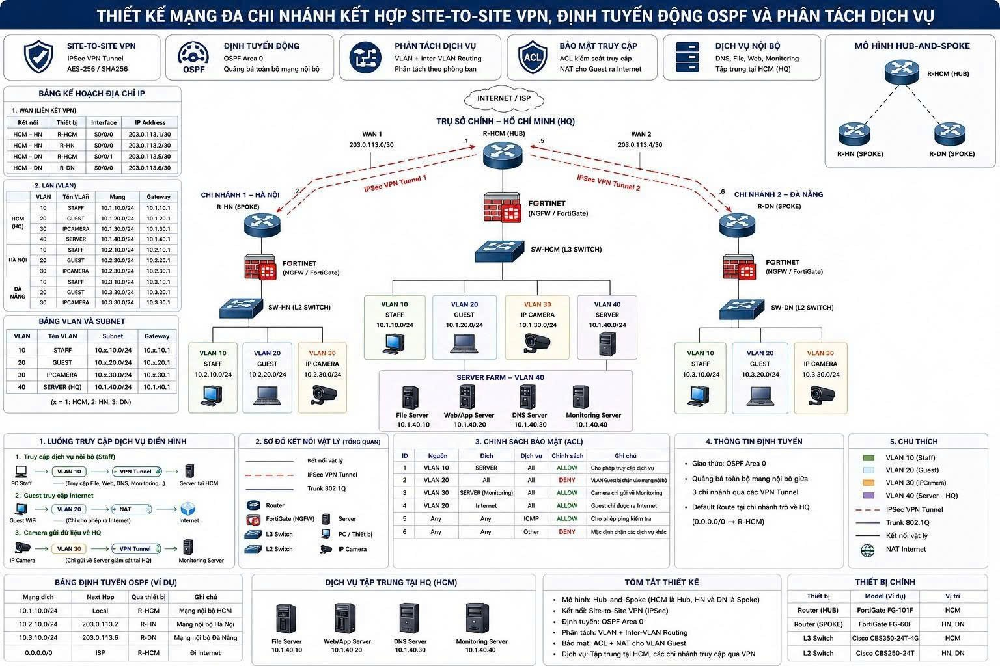

0210/10
Quản trị Website — Trưởng nhóm
Thiết kế Figma, xây dựng website HTML/CSS, phân công công việc và kiểm thử dự án nhóm 2 thành viên.
FigmaHTMLCSSVS Code
SYSTEM & NETWORK • Windows & Linux Server • VMWARE/ESXi
Sinh viên FPT Polytechnic định hướng phát triển về IT Support, System Administration và Network Infrastructure. Tôi yêu thích troubleshooting, virtualization và xây dựng môi trường lab để kiểm thử các mô hình hệ thống thực tế. Trong đồ án tốt nghiệp, tôi trực tiếp xây dựng và mô phỏng hạ tầng mạng doanh nghiệp đa chi nhánh trên EVE-NG, kết hợp VPN, OSPF, VLAN, firewall và các dịch vụ server.
Quản trị hệ thống, máy chủ, mạng và môi trường ảo hóa.
Tôi là Nguyễn Phạm Huy Hoàng, sinh ngày 09/07/2005, sinh tại Thành phố Hồ Chí Minh, quê quán Hà Tĩnh. Hiện tôi đang theo học ngành Ứng dụng phần mềm tại FPT Polytechnic.
Trong quá trình học tập, tôi nhận thấy bản thân đặc biệt yêu thích các công việc liên quan đến hệ thống, mạng máy tính, máy chủ và xử lý sự cố hơn là chỉ tập trung vào phát triển phần mềm. Vì vậy, tôi định hướng phát triển theo con đường IT Support → System Administration → System Engineer.
Tôi thường xuyên thực hành các mô hình lab về TCP/IP, Subnetting, VLAN, Routing, DHCP, DNS, Firewall, Windows & Linux Server và VMware/ESXi. Tôi cũng có trải nghiệm thực tế tại FPT Telecom, qua đó hiểu hơn về quy trình hỗ trợ kỹ thuật và troubleshooting tại khách hàng.
20+ tuổi • sinh tại TP. Hồ Chí Minh
Khu vực hiện tại: Bình Dương
IT Support → System / Network Administration
2024 – 2026
Tham gia cùng kỹ thuật viên trong các công việc triển khai và hỗ trợ kỹ thuật tại khách hàng.
Thiết kế mô hình mạng doanh nghiệp gồm trụ sở chính tại HCM và các chi nhánh Hà Nội, Đà Nẵng theo mô hình Hub-and-Spoke; kết hợp Site-to-Site IPSec VPN, OSPF Area 0, VLAN, Inter‑VLAN Routing, Firewall, ACL và NAT.
EVE-NG được sử dụng để mô phỏng và kiểm thử toàn bộ topology mạng doanh nghiệp trước khi đánh giá cấu hình và luồng kết nối.
VLAN 10 Staff • VLAN 20 Guest • VLAN 30 IP Camera • VLAN 40 Server.
File Server • Web/App Server • DNS Server • Monitoring Server.
ACL kiểm soát truy cập, Guest ra Internet, camera tới Monitoring và chặn traffic không cần thiết.
OSPF Area 0 quảng bá route giữa các site; default route về Hub/HCM.
Thiết kế topology, lập kế hoạch IP/VLAN, cấu hình routing, VPN, ACL và kiểm thử kết nối giữa các chi nhánh trong EVE-NG.

Thiết kế Figma, xây dựng website HTML/CSS, phân công công việc và kiểm thử dự án nhóm 2 thành viên.
Quản lý nhóm, phân công nhiệm vụ, theo dõi tiến độ và tham gia phát triển ứng dụng.
Thực hành Server–Client, domain, DNS/DHCP và mạng nội bộ trong môi trường VMware/ESXi.
TCP/IP, IPv4, Subnetting, VLAN, Routing, OSPF, DHCP, DNS, VPN.
Windows, Windows Server, Linux cơ bản, Domain, DNS/DHCP và quản trị user/client.
Xây dựng môi trường server lab, máy ảo và mô hình nhiều máy chủ với VMware/ESXi.
Thực hành firewall, ACL, NAT, phân quyền truy cập và kiểm tra traffic flow.
Đồ án tốt nghiệp
GPA hiện tại
Tín chỉ hoàn thành
Học bổng khuyến khích liên tiếp
Hỗ trợ trao tặng nhu yếu phẩm cho trung tâm trẻ mồ côi • Tham dự hội thảo điện toán đám mây • Tham quan FPT Telecom • Workshop chuyên ngành • POLY RUN 2026 – “RUN YOUR WAY”
Nếu bạn đang tìm ứng viên trẻ cho vị trí IT Support / System, mình rất vui được trao đổi.